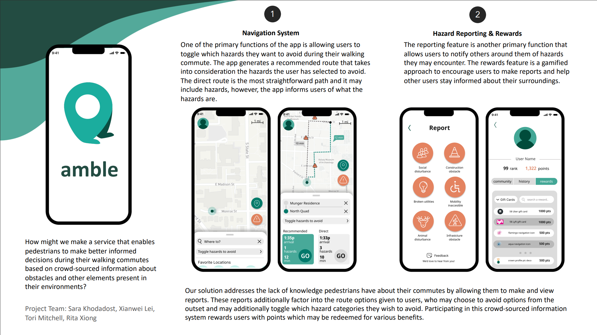

Welcome to Xianwei's portfolio!
About Xianwei Lei
UI/UX Designer & Urban Planner
This is Xianwei, a designer, and a planner with a passion for building user-centered experiences, connecting with new faces, and constantly learning and further growing as a designer and listener. Coming from a diverse background allows me to take a different perspective on problem-solving. I am deeply interested in human behavior, and putting people at the center of the design is key to my design process.
My UX Design Works:
1. Navigation app for pedestrains
My team and I are interested in exploring how people interact with their environment and the intersection of safety with personal commutes in addition to how community can be fostered and integrated within the context of the personal commute. So how might we enable individuals who commute using non-personal motor vehicles, particularly in last-mile situations, to better make informed decisions, thus enabling them to feel safe and confident through every point of their commute?
